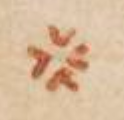
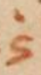

Vat. gr. 1422 - Transcription
transcribed by
Sebastiano Panteghini
FWF Project 32988
Available under the
Creative Commons ShareAlike 4.0 International License
2020-07-02
The facsimiles of the manuscript are available: Vat. gr. 1422
The pinakes identifier of the manuscript is: 68053
The content of the manuscript is:
Physical description of the manuscript:
Form: codex
Material: parchment
Extent: 390 x 300 mm
- Fols. 1r-24v are written in two columns. The liniature type of fols 1r-24v is 32D2.
- Fols. 25r-242v are written as bordercatena. Liniature: 18 vertical lines for the bible
verses; 64 vertical lines for the catena.
- Fols. 258v-259r contain a textcatena.
Decoration: Contains coloured capitals and decoration.
Written in the 10th or 11th century.
Bibliography
Richard, Marcel, Asterii Sophistae Commentariorum in Psalmos quae supersunt. Accedunt aliquot homiliae
anonymae, Osloae 1956, 249-273 (= Symbolae Osloenses Fasc. Supplet. 16).
de Montfaucon, Bernard, Τοῦ ἐν ἁγίοις Πατρὸς ἡμῶν Ἀθανασίου ἀρχιεπ. Ἀλεξανδρείας τὰ εὑρισκόμενα πάντα. Sancti
Patris nostri Athanasii archiep. Alexandrini opera omnia quæ extant vel quæ ejus nomine
circumferuntur. 1.2, Paris 1698, 1009-1239.
de Montfaucon, Bernard, Collectio nova Patrum et Scriptorum Græcorum, Eusebii Cæsariensis. Athanasii, & Cosmæ
Ægyptii. 2, Paris 1706, 63-101. Reprint in: Migne, Jean-Paul, PG 27:60-546, Paris, 1857.
Maurists, N.N., Homiliae super Psalmos., Paris 1857, 209-494 (= PG 29).
Aubert, Jean, Cyrilli Alexandriæ archiepiscopi opera in VI. tomos tributa. 1, Paris 1638. Reprint in: Migne, Jean-Paul, PG 69:717-1273, Paris 1864.
Olivier, Jean-Marie, Diodori Tarsensis Commentarii in Psalmos. 1. Commentarii in Psalmos I–L quorum editionem
principem curavit J.-M. Olivier, Turnhout / Leuven 1980 (= Corpus Christianorum, Series Graeca 6).
Mühlenberg, Ekkehard, Psalmenkommentare aus der Katenenüberlieferung. 1, Berlin / New York 1975, 121-375 (= Patristische Texte und Studien 15).
Bandt, Cordula, Eusebius, Periochae, in: Bandt, Cordula, Risch, Franz Xaver, Villani, Barbara, Die Prologtexte zu den Psalmen von Origenes und Eusebius., Berlin / Boston 2019, 128-140 (= Texte und Untersuchungen zur Geschichte der altchristlichen Literatur 183).
Villani, Barbara, Eusebii fragmenta in Psalmos 1-50, forthcoming, 72-441 (= PG 23).
Dorival, Gilles, Fragments of Uncertain Origin from Cod. Vat. gr. 1422. Les chaînes exégétiques grecques
sur les Psaumes. Contribution a l’étude d’une forme littéraire. 4, Leuven 1995 (= Spicilegium Sacrum Lovaniense 46).
Antonelli, Niccolò M., Τοῦ ἐν ἁγίοις Πατρὸς ἡμῶν Ἀθανασίου ἀρχιεπισκόπου Ἀλεξανδρίας Ἑρμηνεία τῶν Ψαλμῶν
ἢ Περὶ ἐπιγραφῆς Ψαλμῶν· Sancti Patris nostri Athanasii archiepiscopi Alexandriæ Interpretatio
Psalmorum sive De titulis Psalmorum, Rome 1746. Reprint in: Migne, Jean-Paul, PG 27:649–1344, Paris, 1857
Jacić, Vatroslav, Supplementum Psalterii Bononiensis. Incerti auctoris explanatio Psalmorum Graeca ad
fidem codicum, Vindobonae 1917.
Cordier, Balthasar, Expositio Patrum Græcorum in Psalmos. Codicibus ἀνεκδότοις concinnata; in Paraphrasin,
Commentarium & Catenam digesta. Latinitate donata. 3 vols., Antwerp 1643-1646. Reprint in: Migne, Jean-Paul, PG 93:1180–1340, Paris
Delarue, Charles Vincent, Ὠριγένους τὰ εὑρισκόμενα πάντα. Origenis opera omnia quæ græce vel latine tantum
exstant et ejus nomine circumferuntur, Ex Variis Editionibus, & Codicibus manu exaratis.
2., Paris 1733. Reprint in: Migne, Jean Paul, PG:12 1053–1685, Paris, 1857
Pitra, Jean-Baptiste, Analecta Sacra Spicilegio Solesmensi parata. 2., 1884 (= Patres antenicaeni, typis Tusculanis).
Pitra, Jean-Baptiste, Analecta Sacra Spicilegio Solesmensi parata. 3., Veneto 1883 (= Patres antenicaeni; e typographeo Veneto).
Schulze, Johann Ludwig, Τοῦ μακαρίου Θεοδωρήτου εἰς τοὺς Ψαλμοὺς Ἑρμηνεία. B. Theodoreti Interpretatio Psalmorum.
Ex recensione Iac. Sirmondi graece et latine seorsim edidit, Graeca e codicibus locupletavit,
versionem Latinam recognovit, et variantes lectiones adiecit, Halle 1769. Reprint in: Migne, Jean-Paul, PG 80:857–1997, Paris, 1860
The following glyphs are marked in the transcription:
 GREEK PUNCTUATION THREE DOTS
GREEK PUNCTUATION THREE DOTS
 LINKING SIGN ONE
LINKING SIGN ONE
 LINKING SIGN TWO
LINKING SIGN TWO
 LINKING SIGN THREE
LINKING SIGN THREE
 LINKING SIGN FOUR
LINKING SIGN FOUR
 LINKING SIGN FIVE
LINKING SIGN FIVE
 LINKING SIGN SIX
LINKING SIGN SIX
 LINKING SIGN SEVEN
LINKING SIGN SEVEN
LINKING SIGN EIGHT
 HORIZONTAL LINE
HORIZONTAL LINE
Abbreviation for καὶ
 Abbreviation for δέ
Abbreviation for δέ
The punctuation has been simplified. Only codepoints 0387 (hex) "GREEK ANO TELEIA",
00B7 (hex) "MIDDLE DOT", 2022 (hex) "BULLET", 205D (hex) "TRICOLON" and 003A (hex)
"COLON"
are used in the transcription.
"Auszeichnungsmajuskeln" are ignored.
(25r)
[middle of the page] [bibletext]
[Ps (LXX) 1,1a]
(1) Μακάριος ἀνὴρ. ὃς οὐκ ἐπορεύ
(2) θη ἐν βουλῆι (βουλῇ) ἀσεβῶν•
[margin top right side]
(1) [hypopsalmos]
|LINKING SIGN EIGHT| Α´ Β´ ἀλληλούϊα·
[perioche]
|LINKING SIGN EIGHT|
προτροπὴ θεοσεβείας (καὶ) ἀποτροπὴ τοῦ ἐναντί〈〈ου〉〉 |GREEK PUNCTUATION THREE DOTS| [= Eusebius, Perioche in Ps 1 (Bandt) - quotation]
[margin top left side] [hypothesis]
(1)
ὑπο
θ(εσις) 〈ὑπόθεσις〉 τοῦ
α´ ψαλ
μ(οῦ)•
[main text] [hypothesis]
(1) Οὗτος ὁ ψαλμὸς· προτροπὴν θεοσεβείας ἔχει καὶ ἀποτροπὴν
ἀσεβείας· [= Eusebius, Perioche in Ps 1 (Bandt) - paraphrase]
μακαριστέον δὲ κϋρίως· τῷ πρώτως
(2) τὸ ἀληθῶς· τοῦτο δέ ἐστι τὸ ἀγαθὸν δηλονότι τὸ θεῖον• [= Basilius, hom. in Ps 1 (PG 29, 216 B5–7 in Ps 1,1a) - paraphrase]
ὄργανον ὅπερ (καὶ) ναύλα καλεῖται παρεβραίοις (παρ᾿ ἑβραίοις)· παρέλλησι (παρ᾿ ἕλλησι) (δὲ)
(3) ψαλτήριον· ὅπερ μόνον ὀργάν(ων) μουσικῶν ὀρθότατ(ον) εἶναι· οὐδὲν ἔχον ἐπικαμπὲς ἢ σκολιὸν· ἵνα ἡμεῖς τὰ ἄνω ζητ(ῶ)μ(εν) |GREEK PUNCTUATION THREE DOTS| [= fons ignotus (ed. Dorival IV 366) - quotation]
[main text] [commentary]
(4)
ἀλληλούϊα•
αἰνεῖτε τὸν ὄντα ἤτοι τὸν θν (θεὸν)· τὸ γ(ὰρ) ἀλληλοῦ· αἰνεῖτε τὸν ὄντα σημ(νὸν)· τὸ δὲ ϊα· τὸν θν (θεόν)• [= fons ignotus (ed. Dorival IV 367) - quotation]
ὡς δὲ μέλλων
(5) πολλὰ διδάσκειν ἐπίπονα προ [... (5 character(s) left intentionally blank)] παραμυθεῖται τῷ μακαρίῳ τέλει τὰ δυσχερῆ· ταύτην ἀσφαλῆ κρηπίδα τοῦ
(6) λόγου καταβαλλόμενο(ς)· κυρί(ως) μὲν οὖν μακαριστὸν τὸ ἀγαθὸν· (καὶ) ὁ θς (θεός)· οὗ πάντα ἐφίεται· ὅπερ ἀγνοοῦντες τινὲς πε(ρὶ) τὰ κοσμικὰ
(7) κ(α)(τα)γίνονται· ὧν οὐδέν ἐστιν ἀγαθὸν τῇ ἑαυτοῦ φυ(σει) (φύσει)· ἅτε δὴ τρεπτὸν (καὶ) τοὺς αὐτὸ κεκτημέν(ους) ἀγαθοὺς μὴ ποιοῦν· μακάριο(ς) οὖν
(8) ὁ τὰ ὄντως ὄντα ποθῶν· ἀνὴρ δὲ φήσας· οὐκαπέκλεισε (οὐκ ἀπέκλεισε) τοῦ μακαρισμοῦ τὰς γυναῖκας· – ὧν γὰρ ἡ φύσις κοινὴ· (καὶ) τὰ
(9) ἔργα (καὶ) ὁ μισθὸς· – διὰ δὲ τοῦ ἡγεμονικωτέρου τὴν κοινὴν ἐδήλωσε φυ(σιν) (φύσιν)· διδάσκει (δὲ)· (καὶ) πῶς ἐπιγνωσόμεθα· τὸν μακαρισμ(ὸν)
(10) ἐπαγαγὼν· ὃς οὐκ ἐπορεύθη ἐν βουλῂ 〈βουλῇ〉 ἀσεβῶν· οὐκ εἶπεν πεπόρευται· ὁ μὲν γ(ὰρ) ἐν τῷ βίῳ τυγχάνων· οὔπω μακαριστὸ(ς)· διὰ τὸ
(11) ἄδηλον τῆς ἐκβάσεως· ὁ (δὲ) τῷ τοιούτ(ῳ) τέλει καθορμισθεὶς ἀσφαλῶς μακαρίζεται· πῶς οὖν μακάριοι οἱ πορευόμενοι
(12) ἐν νόμ(ῳ) κυ (κυρίου)· (;) [Ps 118,1c.d] κατὰυτὸ (κατ᾿αὐτὸ) δηλαδὴ τὸ ἔργον· ἀλλ᾿οὐχ ὁ πρὸ(ς) ἅπαξ ἢ
(13) δεύτερ(ον) φυγὸν 〈φυγῶν〉 τὸ κακ(ὸν) ἐπαινετός• [= Basilius, hom. in Ps 1 (PG 29, 213 C13–217 B8 in Ps 1,1a) - paraphrase-abbreviated]
ἀλλω(ς) 〈ἄλλως〉 τοῦ αὐτ(οῦ)•
Μακαρι
(14) στέον γ(ὰρ) ἀληθῶς οὐ † τὸ μετέχον ἀρετῆς [... (5 character(s) left intentionally blank)] φεύγων † τὸ κακ(ὸν·) 〈κακόν·〉 οὕ
(15) τω γὰρ ἂν κυρί(ως) ἀπέχεσθαι λέγοιτο· οὐ γ(ὰρ) καθάπαξ τὸν μὴ πο
(16) ρευθέντα ἐν βουλῇ ἀσεβῶν· (καὶ) ἐν ὁδῷ ἁμαρτωλῶν μὴ στάν(τα)
(17) (καὶ) ἐπὶ καθέδραν λοιμ(ῶν) μὴ καθίσαντα μακαρίζει· ἀλλὰ τὸν τ〈〈ού〉〉
(18) των ἀπεσχήμεν(ον)· τῶι (τῷ) ἔχοντι τὸ θέλημα αὐτοῦ ἐν τῶι (τῷ) νόμῳ κυ (κυρίου)· [= Basilius, hom. in Ps 1 (PG 29, 217 A15–B8 in Ps 1,1a) (ed. Dorival IV 367) - paraphrase]
(19) διατί (διὰ τί) οὖν μνησθεὶς ἀνδρὸς τὰς γυναῖκας παρεσιώπησεν· (;)
(20) ὅτι μιᾶς οὔσης τῆς φύ(σεως)· ἀρκεῖν ἡγήσατο ἐκ τοῦ ἡγεμονικ(ω)τέρ(ου)
(21) τὸ ὅλον ἐνδείξασθαι· [= Basilius, hom. in Ps 1 (PG 29, 216 D1–217 A7 in Ps 1,1a) - paraphrase-abbreviated]
μακαρίζει δὲ ἄνδρα· τὸν μὴ συντρέ
(22) χοντα γνώμῃ ἀσεβῶν· ὡς μὴ πορευόμενον αὐτοῖς· τὰ ἐ
(23) ναντία βουλεύεσθαι τῶν ἐκείνοις φίλων• [= fons ignotus in Ps 1,1a (ed. Dorival IV 367) - quotation]
Ὡρ(ι)γ(ένους) Ἀλλὰ πῶς
(24) ἐν ἀναιρέσει κακ(ῶν) ὁ μακαρισμό(ς)· (;) κοινὸν γ(ὰρ) καὶ τῶν ἀψύχων καὶ
(25) τῶν ἀλόγων ἡ τῶν κακ(ῶν) ἀποχή· διὰ τοῦτο τοίνυν ἐπήγαγεν·
(26) ἀλλ᾿ ἢ ἐν τῷ νόμῳ κυ (κυρίου) τὸ θέλημα αὐτοῦ· τοῦτο γ(ὰρ) μόνου πέφυ
(27) κε λογικοῦ· ἀλλὰ καὶ τῆς τ(ῶν) καλῶν ἀναλήψεως κατάρχη 〈καταρχὴ〉 τ(ῶν)
(28) κακ(ῶν) ἡ φυγή· ἔκκλινον γ(ὰρ) φη(σὶν) ἀπὸ κακοῦ καὶ ποίησον ἀγαθόν· [Ps 33,15a; 36,27a] [= Basilius, hom. in Ps 1 (PG 29, 217 B9–C5 in Ps 1,1a) - paraphrase-abbreviated]
(29) ὡς γὰρ ἐπικλίμακο(ς) (ἐπὶ κλίμακος) πρώτη ἀνάβασις ἡ τῆς γῆς ἀναχώρησις· οὕτως ἐπὶ τῆς κατὰ θν (θεὸν) πολιτείας ἀρχὴ προκοπῆς ὁ χωρισμὸ(ς)
(30) τοῦ κακοῦ· ἀλλὰ καὶ πᾶσα πράξεως ἀργία τῆς ἐνεργείας εὐμαρεστέρα· ὁποῖον τὸ οὐ μοιχεύσεις· [Ex 20,13; Mt 5,27; 19,18] οὐ πορνεύσεις (καὶ) τὰ ἑξ(ῆς)·
(31) τὸ (δὲ) ἀγαπήσεις τ(ὸν) πλησίον σ(ου) [Mt 5,42; 19,19] καὶ πώλησόν σ(ου) τὰ ὑπάρχοντα· (καὶ) δὸς πτωχ(οῖς)· [Mt 19,21] ἐάν τις σε ἀγγαρεύσῃ μίλιον ἓν. ὕπαγον μεταὐτ(οῦ) (μετ᾿ αὐτοῦ)
(32) δύο· [Mt 5,41] ψυχῆς ἤδη νεανικῆς καὶ ἀθλητῶν ἐνεργήματα• [= Basilius, hom. in Ps 1 (PG 29, 217 D5–220 A11) - quotation-abbreviated]
ἄλλω(ς) Ἀστερί〈〈ου〉〉·
Ὡς μαθητὴς δὲ τοῦ χυ (Χριστοῦ) ὁ δαδ (Δαυῒδ) ἀπὸ μακαρισμ(οῦ)
(33) ἤρξατο τῆς διδασκαλίας· ἀγγέλους δὲ οὐ μακαρίζει· – ἄγγελος γ(ὰρ) ἐν βουλαῖς ἀσεβῶν οὐ πορεύεται· ἀλλ᾿οὔτε βρέφος· ἀνόη
(34) τον γὰρ· – ἀλλ᾿οὐδὲ γυναῖκας· κακείν(ων) (κἀκείνων) γὰρ ἀνὴρ ἡ κατορθοῦσα γνωρίζεται· ἐπεὶ μὴ δὲ πᾶς ἀνὴρ εἰ κατὰ φυ(σιν) (φύσιν) τοιοῦτο(ς)· ὡς δὲ κα
(35) κόφωνο(ς) ἄφωνο(ς) λέγεται· oὕτως ἀσεβεῖς οἱ τὸν θν (θεὸν) μὴ σὺν ἀληθ(είᾳ) σεβόμενοι· [= Asterius, fr. 1 in Ps 1,1 (249, 3–13 Richard) - paraphrase-abbreviated]
κυρίως δὲ μακάριο(ς) ὢν ὁ θς (θεὸς)· – παῦλος γάρ φη(σιν) ὁ μακάριο(ς)
(36) καὶ μόνος δυνάστης· [1 Tim 6,15] – μετέδωκε ταύτης τῆς προσηγορίας ἡμῖν[·] ὡς καὶ πιστὸς καλούμενο(ς)· 〈·〉 πιστὸς γάρ φη(σιν) ὁ θς (θεὸς) διοὗ (δι᾿οὗ) ἐκκλή
(37) θητε· [1 Cor 1,9] (καὶ) θς (θεὸς) πιστὸ(ς)· καὶ οὐκ ἔστιν ἀδικία [Deut 32,4; Od 2,4c] ἐν αὐτῷ· [πειθομένους ἐκάλεσεν] ὥσπερ οὖν καὶ θεοὺς κατὰ τὸ ἐγὼ εἶπα θεοὶ ἐστέ• [Ps 81,6a] [= Theodoretus, comm. in Ps 1,1 (PG 80, 868 A4–B3) - paraphrase-abbreviated]
Θεοδωρήτου•
(38) Καὶ ἐνταῦθα ῥᾴδιον συνιδεῖν· ὡς πάλαι παρ’ ἑβραίοις τὰς ἐπιγραφὰς εὑρόντες οἱ τὰς θείας
ἑρμηνευκότες γραφὰς
(39) μετέθεσαν εἰς τὴν ἑλλάδα φωνὴν· 〈φωνήν·〉 τοῦτ(ον) γ(ὰρ) καὶ τ(ὸν) μετ’ αὐτ(ὸν) ψαλμὸν ἀνεπιγράφους εὑρόντες. ἀνεπιγράφους κατέ
(40) λιπον· οὐ τολμήσαντες παρ’ ἑαυτ(ῶν) τι προσθεῖναι τοῖς λογίοις τοῦ πνς (πνεύματος)· τινὲς μέντοι τῶν τὰς ὑποθθ (ὑποθέσεις) τῶν ψαλμῶν συγγρα
(41) φόντ(ων)· ἠθικὴν τοῦτ(ον) ἔφα(σαν) τὸν ψαλμ(ον) 〈ψαλμὸν〉 περιέχειν διδασκαλί(αν)· ἐμοὶ (δὲ) οὐχ ἧττ(ον) δογματικὸς ἢ ἠθικὸς ἔδοξεν εἶναι· περιέχει
(42) γὰρ οὐχ ἁμαρτωλῶν μόνον· ἀλλὰ καὶ ἀσεβῶν κατηγορίαν· καὶ παραινεῖ τοῖς θείοις λογίοις
προσέχειν διηνεκῶς· ἐξ ὧν
(43) οὐκ ἠθικὴν μόνον· ἀλλὰ καὶ δογματικὴν ὠφέλειαν καρπούμεθα· ἁρμοδίως δὲ λίαν ὁ μέγας
δαδ (Δαυῒδ) μακαρισμὸν τῆς οἰκεί(ας)
(44) προτέθεικε συγγραφῆς τὸν ἑαυτοῦ υἱὸν ὁμοῦ καὶ δεσπότην μιμούμενο(ς) τὸν σρα (σωτῆρα) λέγω χν (Χριστόν)· ὃς τῆς πρὸς τοὺς ἱεροὺς ἀποστο(λους) (ἀποστόλους)
(45) διδασκαλί(ας) ἀπὸ μακαρισμῶν ἤρξατο· μακάριοι λέγων οἱ πτωχοὶ τῶι (τῷ) πνι (πνεύματι)· ὅτι αὐτῶν ἐστιν ἡ βασιλεία τ(ῶν) οὐνῶν (οὐρανῶν): [Mt 5,3] υἱὸς θὲ 〈δὲ〉
(46) τοῦ δαδ (Δαυῒδ) ὁ δεσπότης χς (Χριστὸς)· ὡς ἄνος (ἄνθρωπος) κατὰ τὴν τῶν ἱερῶν εὐαγγελίων φωνὴν· βίβλος γὰρ γενέσεως ἰυ (Ἰησοῦ) χυ (Χριστοῦ)· υἱοῦ δαδ (Δαυῒδ)· υἱοῦ
(47) Ἀβραὰμ· 〈Ἀβραάμ·〉 [Mt 1,1] ὁ κς (κύριος) δὲ αὐτοῦ καὶ ποιητὴς· ὡς θς (θεός)· αὐτός ἐστιν ἡ φω(νὴ)· εἶπεν ὁ κς (κύριος) τῷ κω (κυρίῳ) μου κάθου ἐκ δεξιῶν μ(ου)· [Ps 109,13; Mt 22,44; Act 2,34 et al.] μακαρίζει τοίνυν·
(48) τ(ὸν) μήτε τοῖς ἀσεβέ(σιν) ὁδοῦ κοινωνήσαντα· μήτε βεβαίαν τ(ῶν) ἁμαρτ(ω)λῶν δεξάμεν(ον) τὴν βουλὴν· – τοῦτο γ(ὰρ) δὴ στάσιν ἐκά
(49) λεσεν· – τὸ τὴν μόνιμ(ον) τῶν λοιμ(ῶν) φυγεῖν διαφθορὰν· 〈διαφθοράν·〉 τὸ (δὲ) μακάριο(ς) ὄνομα· θεία μὲν ὑπάρχει προσηγορία (καὶ) μάρτυς ὁ θεῖος
(50) ἀπόστολο(ς) βοῶν· ὁ μακάριο(ς) καὶ μόνος δυνάστ(ης)· ὁ βασιλεὺς τῶν βασιλευόντ(ων)· (καὶ) κς (κύριος) τ(ων) 〈τῶν〉 κυριευόντ(ων)· [1 Tim 6,15] μετέδωκε δὲ (καὶ) ταύτης
(51) τοῖς ἀνοις (ἀνθρώποις)· ὥσπερ (καὶ) τῶν ἄλλω(ν) ὁ δεσπότ(ης)· καὶ γ(ὰρ) πιστὸς καλούμενο(ς)· – πιστὸς γάρ φη(σιν) ὁ θς (θεὸς) δι’ οὗ ἐκλήθητε εἰς κοινωνίαν τοῦ υἱ〈〈οῦ〉〉
(52) αὐτῆς 〈αὐτοῦ〉· [1 Cor 1,9] καὶ ὁ μακάριο(ς) Mωϋσῆς θς (θεὸς). φη(σὶ) πιστὸς· (καὶ) οὐκ ἔστιν ἀδικία ἐν αὐτ(ῷ)· [Deut 32,4; Od 2,4c] – ἐκάλεσεν (καὶ) τῶν ἀνων (ἀνθρώπων) πιστοὺς τοὺς ἀναμφιβόλως
(53) αὐτοῦ δεχομέν(ους) τοὺς λόγους[·] οὕτω θς (θεὸς) (καὶ) ὢν (καὶ) καλούμενο(ς) μετέδωκε καὶ ταύτης τῆς κλήσεως· τοῖς ἀνοις (ἀνθρώποις) ὁ μεγαλόδωρος
(54) (καὶ) βοᾷ· ἐγὼ εἶπα θεοὶ ἐστὲ καὶ υἱοὶ ὑψίστου πάντες· ὑμεῖς δὲ ὡς ἄνοι (ἄνθρωποι) ἀποθνήσκετε· [Ps 81,6-7a] τὸ οὖν μακάριο(ς) ὄνομα τῆς κατἀ
(55) ρετὴν (κατ’ ἀρετὴν) τελειώσεως ὑπάρχει καρπὸ(ς)· ὥσπερ γ(ὰρ) ἕκαστον τῶν κατὰ τὸν βίον ἐπιτηδευμάτ(ων)· εἰς τὸ τέλος ὁρᾷ· ἀθλη
(56) τικὴ μὲν εἰς τοὺς ἐκ κοτίνου στεφάνους· στρατηγικὴ τὲ εἰς νίκας (καὶ) τρόπαια· καὶ μέντοι (καὶ) ἰατρικὴ εἰς ὑγείαν (καὶ) νό
(57) σων ἀπαλλαγὴν· (καὶ) ἐμπορικὴ εἰς συλλογὴν κτημάτ(ων) καὶ πλούτ(ου) περιουσίαν· οὕτως (καὶ) ἡ τῆς ἀρετῆς ἐπιστήμη· καρ
(58) π(ὸν) μὲν ἔχει καὶ τέ(λος) τ(ὸν) θεῖον μακαρισμὸν· 〈μακαρισμóν·〉 μὴδεὶς (μηδεὶς) (δὲ) ἄνδρα μόνον ὁρῶν μακαριζόμενον ἐνταῦθα· ἐστερῆσθαι νομίσῃ
(59) τοῦδε τοῦ μακαρισμοῦ τῶν γυναικῶν τὸ γένο(ς)· οὐδὲ γὰρ ὁ δεσπότης χς (Χριστὸς)· ἀρσενικοὺς τοὺς μακαρισμοὺς χρηματίσ(ας)·
(60) ἀπηγόρευσε ταῖς γυναιξὶ τὴν κτῆσιν τῆς ἀρετῆς· συμπεριλαμβάνει γὰρ τοῖς ἀνδράσι (καὶ) τὰς γυναῖκας ὁ λόγος· κε
(61) φαλὴ γὰρ γυναικὸς ὁ ἀνὴρ. [1 Cor 11,3] φη(σὶν) ὁ θεῖος ἀπόστολο(ς)[·] συνάπτεται δὲ τῇ κεφαλῇ τὰ μέλη τοῦ σώματο(ς)· καὶ κεφαλῆς στεφα
(62) νουμέν(ης), ἀγάλλεται· οὕτω (καὶ) πρός τινα διαλεγόμενοι· (καὶ) φίλην αὐτ(ῶν) κεφαλὴν ὀνομάζοντες· οὐ χωρίζομεν τῶν ἄλλων
(63) μορίων τοῦ σώματο(ς)· ἀλλ’ ἀπὸ μέρους τὸ πᾶν προσφθεγγόμεθα· οὐχ ἁπλῶς δὲ πρῶτ(ον) ὁδοῦ· εἶτα στάσεως· εἶτα
(64) καθέδρας ἐμνημόνευσεν· ἀλλ’ εἰδῶς 〈εἰδὼς〉 ἀκριβῶς· ὡς κίνησιν μὲν πρῶτ(ον) ὁ λογισμὸς ὑπομένει· εἴτε φαῦλος εἴτε σπ〈〈ου〉〉 [= Theodoretus, comm. in Ps 1,1 (PG 80, 865 B11–869 A12) - quotation]
(25v)
[middle of the page] [bibletext]
[Ps (LXX) 1,1b]
(1) |LINKING SIGN EIGHT| ΒKαὶ ἐν ὁδῶι (ὁδῷ) ἁμαρτωλῶν οὐκ ἔστη•
[Ps (LXX) 1,1c]
(2) ΓΚαὶ ἐπὶ καθέδραν
|LINKING SIGN ONE| λοιμῶν οὐκ ἐ
(3) κάθισεν•
[main text] [commentary]
(1) δαῖος εἴη· εἶτα στάσιν· εἶτα τινὰ ἐδραίαν (ἑδραίαν) βεβαίωσιν· παραινεῖ τοίνυν· μήτε τῷ νῷ πα(ρα)δέξασθαι δυσσεβῆ τινὰ ἔν
(2) νοιαν· μήτε ἐπὶ πρᾶξιν ὁδεῦσαι παράνομον· ἀσεβεῖς δὲ φίλον τῇ θείᾳ γραφῇ καλεῖν τοὺς
ἀθεΐαν, ἢ πολυθεΐαν θρη
(3) σκεύοντ(ας)· ἁμαρτωλοὺς δὲ τοὺς παρανομίᾳ συζῇν προαιρουμένους· (καὶ) βίον διεφθαρμένον ἀσπαζομένους· λοιμοὺς (δὲ)
(4) τοὺς μὴ μόνον σφὰς (σφᾶς) αὐτοὺς λυμαινομένους· ἀλλὰ καὶ ἑτέροις τῆς λύμης μεταδιδόντ(ας)· κατὰ τὴν ἐπισκήπτουσαν (καὶ)
(5) ἀνοις (ἀνθρώποις) (καὶ) κτήνεσι νόσον· ἧς μεταλαγχάνουσιν· οἱ τοῖς νοσοῦσι πελάζοντες· διὸ φεύγειν ὁ λόγο(ς) παρακελεύεται καὶ τὰ τού
(6) των συνέδρια· ἐπειδὴ δὲ οὐκ ἀπόχρη· εἰς ἀρετῆς τελείωσιν· ἡ τῆς κακίας φυγὴ· – ἔκκλινον γάρ φη(σιν) ἀπὸ κακοῦ (καὶ) ποίη
(7) σον ἀγαθὸν· [Ps 33,15a; 36,27a] (καὶ) ὁ μακάριο(ς) Ἡσαΐας παύσασθε φη(σὶν) ἀπὸ τῶν πονηριῶν ὑμῶν· μάθετε καλὸν ποιεῖν· [Is 1,16-17] – μάλα εἰκότως ἐπήγα
(8) γεν ὁ μακάριο(ς) δαδ (Δαυΐδ)• [= Theodoretus, comm. in Ps 1,1 (PG 80, 865 B11–869 A12) - quotation (continued)]
ἄλλω(ς) Ἡ μὲν προφητεία πληροῦται ἐν τῷ Ἰωσὴφ· ὅτι οὐ συμπαρεγένετο τοῖς ἰουδαίοις ἡνίκα
(9) κατὰ χυ (Χριστοῦ) ἐβουλεύοντο• [= Hesychius, comm. brevis in Ps 1,1a (1, 1–6 Jagić) - quotation]
Ἐυσεβί〈〈ου〉〉· Μακαριότητο(ς) μὲν κατὰ φυ(σιν) (φύσιν) ἅπαντες ὀρεγόμεθα· ἀλλ᾿ἐπείπερ ἀγνοοῦντες τινὲς
(10) ἐν τοῖς σωματικοῖς ἀγαθοῖς ταύτην εἶναι νομίζουσιν. εἰκότως ἐντεῦθεν τὴν ἀρχὴν τῆς
ὑμνῳδίας πεποίηται
(11) περὶ τοῦ μακαρίου τέλους διδάσκ(ων) τὸν ἀρετῆς ἐπιβαίνοντα· ὡς δὲ σπανίων τῶν τότε κατορθούντ(ων). ἕνα μόνον ὑ
(12) πέθετο· ὁ δὲ σηρ (σωτὴρ) ἡμῶν· πλείονας ποιῶν μακαρίους πληθυντικῶς τοὺς μακαρισμοὺς προσφέρεται· πρῶτος δὲ
(13) ἂν εἴη μακαριζόμενο(ς)· διὸ καὶ ἐπ᾿αὐτὸν ἀνοίσει τίς τὸν παρόντα ψαλμὸν· ἅτε γενόμενον ἄνδρα τῆς νύμφης
αὐτοῦ
(14) ἐκκλησίας· ὅθεν ὁ ἀνὴρ σὺν τῷ ἄρθ(ρῳ) κεῖται παρ᾿ἑβραίοις• [= Eusebius, fr. 2 in Ps 1,1a (Villani = PG 23, 76 C2–D5) - paraphrase-abbreviated]
Βασιλ(είου)·
Τὸ μακάριο(ς) ὄνομα τῆς κατἀρετὴν (κατ᾿ἀρετὴν) πολιτείας ὑπαρχ(ει) (ὑπάρχει)
(15) καρπὸς· ὥσπερ γὰρ ἕκαστον τῶν κατὰ τὸν βίον ἐπιτηδευμάτων εἴς τι τέλος ἀφορᾷ· οἷον
ἡ στρατιωτικὴ εἰς τρόπαια·
(16) (καὶ) ἰατρικὴ εἰς ὑγίειαν· οὕτως (καὶ) ἡ τῆς ἀρετῆς ἐπιστήμη καρπὸν ἔχει καὶ τέλος τὸν θεῖον μακαρισμὸν· 〈μακαρισμóν·〉 μὴδεὶς (μηδεὶς) δὲ τοῦ μακαρι
(17) σμοῦ τούτου ἐστερῆσθαι τὰς γυναῖκας νομιζέτω· συμπεριλαμβάνει γ(ὰρ) τοῖς ἀνδράσι (καὶ) τὰς γυναῖκας· κατὰ τὸ εἶναι τὸν ἄν
(18) δρα κεφαλὴν τῆς γυναικὸς· 〈γυναικóς·〉 [= Theodoretus, comm. in Ps 1,1 (PG 80, 868 B4–C4) - quotation-abbreviated]
οὐχ ἁπλῶς δὲ πρῶτον
(19) ὁδοῦ· εἶτα στάσεως· εἶτα καθέδρας ἐμνημόνευσεν· ἀλ
(20) λ’ εἰδὼς ἀκριβῶς ὡς κίνησιν μὲν πρῶτον ὁ λογισμὸς ὑ
(21) πομένει· εἶτα στάσιν· εἶτα ἐδραίωσιν (ἑδραίωσιν) παραινεῖ μήτε
(22) τῷ νῶι (νῷ) δέξασθαι δυσσεβῆ τινὰ ἔννοιαν· μήτε ἐπὶ
(23) πρᾶξιν ὁδεῦσαι παράνομον· ἀσεβεῖς δὲ φίλον τῇ
(24) θείᾳ γραφῇ καλεῖν. τοὺς ἀθεΐαν ἢ πολυθεΐαν θρησκεύ
(25) οντας· ἁμαρτωλοὺς δὲ· τοὺς παρανομίᾳ συζῶντας· καὶ βίον διεφθαρμένον ἀσπαζομένους·
λοιμοὺς δὲ τοὺς μὴ μό
(26) ν(ον) σφὰς (σφᾶς) αὐτοὺς λυμαινομένους· ἀλλὰ καὶ ἑτέροις τῆς λύμης μεταδιδόντ(ας) κατὰ τὴν τῆς λοιμικῆς νόσου μετάδοσιν· διὸ
(27) φεύγειν ὁ λόγος πα(ρα)κελεύεται τὰ τούτων συνέδρια• [= Theodoretus, comm. in Ps 1,1 (PG 80, 868 C10–869 A6) - quotation-abbreviated]
Ἀθανασίου•
Δυνατὸν δὲ βουλὴν ἀσεβῶν εἰπεῖν τὴν σύνοδον· τὴν
(28) συνέλευσιν τῶν πονηρῶν· καὶ ἐπεὶ βλαβερὸν· τὸ τοῖς ἀθροίσμασι τῶν ἀσεβῶν παραβάλλειν·
μακαρίζει· τὸν μὴ δὲ
(29) κατὰ ποσὸν εἰς αὐτὸν αὐτοῖς ἐρχόμενον· [= fons ignotus in Ps 1,1a (= PG 27, 60 C15–D in Ps 1,1a) - quotation]
τοιοῦτος ὑπῆρχεν ὁ Ἰωσὴφ ὁ ἀπὸ Ἀριμαθ(ίας)· ὁ τὸ σῶμα τοῦ κυ (κυρίου) καὶ θυ (θεοῦ) θάψας· εἴ
(30) ρηται γ(ὰρ) περὶ αὐτοῦ· ὡς οὐκ ἦν συγκατατιθέμενο(ς) τῇ βουλῇ τῶν ἰυ (Ἰησοῦ) προδοτῶν• [= Hesychius, schol. nr. 3 in Ps 1,1c (Antonelli) - paraphrase]
|HORIZONTAL LINE| [left margin]
|LINKING SIGN EIGHT| Β [main text]
Ἀστερίου•
Διδασκαλί(ας) |LINKING SIGN ONE| γὰρ ἡ κα
(31) θέδρα κατὰ τὸ ἐπὶ τῆς καθέδρας Μωσέως• [Mt 23,2] [= Asterius, fr. 2 in Ps 1,1 (249, 17–18 Richard) - paraphrase]
ἄλλω(ς) Τὴν ἀρχὴν τῆς προφητείας τῶι (τῷ) ἐξ αὐτοῦ κατὰ σάρκα τε
(32) χθησομένῳ χω (Χριστῷ)· ἀνατίθησιν ὁ μέγας δαδ (Δαυΐδ)· διὸ ἐν πρώτοις μακαρίζει τοὺς εἰς αὐτὸν ἠλπικότας· μακαρίους δὲ
(33) καλεῖ τοὺς μὴ πορευθέντας ἐν βουλῇ ἀσεβῶν· μήτε μὴν στάντ(ας) ἐν ὁδῶι (ὁδῷ) ἁμαρτωλῶν· μὴ δὲ ἐπὶ καθέδρας κεκα
(34) θηκότας λοιμῶν· τρία γὰρ ἦν παρὰ ἰουδαίοις τὰ κατὰ τοῦ σρς (σωτῆρος) ἐπαναστάντα· γραμματεῖς φαρισαῖοι· καὶ νομι
(35) κοί· οἳ καὶ κληθεῖεν ἀληθῶς· ἀσεβεῖς καὶ ἁμαρτωλοὶ καὶ λοιμοί• [= Athanasius, Hypothesis in Ps 1 (PG 27, 60 C3–11) schol. nr. 1 in Ps 1,1b) - quotation]
ἄλλω(ς)·
Ἁμαρτωλοὺς εἶναι φαμὲν τοὺς ὑποθέντας
(36) μὲν τῇ πίστει τοῖς θείοις νόμοις τὸν τῆς δικαιοσύνης αὐχένα· κατά γε τὸ εἰδέναι φημὶ
τὸν τ(ῶν) ὅλων θν (θεὸν) καὶ αὐτὸν ἐλέ
(37) σθαι προσκυνεῖν· κατημεληκότας δὲ τὸ κατορθοῦν ἐθέλειν τὸ ἀρέσκον αὐτῶι (αὐτῷ)· καὶ κατολισθήσαντας μὲν εἰς τὸ πα
(38) ραυτίκα τερπνὸν· καὶ ταῖς τοῦ σώματος ἡδοναῖς· καθάπέρ τισι βορβόροις ὁλοτρόπως ἐκκοιλισμένους·
οὐ τῶν
(39) μὴ πορευθέντων μᾶλλον ἐν ὁδῷ ἁμαρτωλῶν ἀποφαίνει μακάριον· ἀλλὰ τὸν μὴ ἀνεχόμενον
στῆναι καὶ ἐγχρονίσαι• [= fons ignotus in Ps 1,1b (ed. Dorival IV 367) - quotation]
(40) [left margin]
ἄλλω(ς) [main text]
Tὸ δὲ ἴδιον τοῦ λόγου· μακαρίζει πάντα ἄνον (ἄνθρωπον)· τὸν μὴ συνεδριάζοντα ἢ συνευδοκοῦντα τοῖς κακὰ βουλευομένοις·
(41) ἢ ἀτάκτως περιπατοῦσιν• [= Hesychius, comm. brevis in Ps 1,1a (1, 6–11 Jagić) - quotation]
ἄλλω(ς)·
Ὡς Λὼτ καὶ πάντες οἱ ποιοῦντες οὕτως ὡς αὐτός• [= fons ignotus in Ps 1,1b - unknown]
Ὡριγε(νους) (Ὡριγένους)·
Ἐι 〈Εἰ〉 καὶ τὸ μὴ ἁ
(42) μαρτάνειν δυσκατόρθωτ(ον) πα(ρὰ) ἀνοις (ἀνθρώποις) εἶναι δοκεῖ· πα(ρὰ) 〈περὶ〉 μόνου γὰρ ἰυ (Ἰησοῦ) γέγραπται· ὃς οὐκ ἔγνω ἁμαρτίαν· οὐδὲ εὑρέθη δόλος
(43) ἐν τῷ στόματι αὐτοῦ• [Is 53,9; 1 Pt 2,22] [= fons ignotus in Ps 1,1b (ed. Dorival IV 367) - quotation]
|HORIZONTAL LINE| [left margin]
Γ´ [main text]
Βασιλείου•
Ὀυχὶ τὴν ἀπὸ τοῦ ξύλου πρὸς ἁμαρτίαν μετάδοσιν νομίζειν ἡμ(ᾶς)
(44) χρὴ τὴν καθέθραν· ἀλλὰ τὴν ἐδραίαν (ἑδραίαν) καὶ μόνιμον ἐν τῇ κρίσει τῆς κακίας διατριβὴν· 〈διατριβήν·〉 [= Basilius, hom. in Ps 1 (PG 29, 224 C5–10 in Ps 1,1c) - paraphrase-abbreviated]
ὅτι δὲ καὶ αἱ καθέδραι
(45) διδασκαλίας εἰσὶ σύμβολα· παρίσταται ἐκ τῆς τοῦ Μωϋσέως καθέδρας· κατὰ τὸ εἰρημένον
ἐκάθισαν οἱ γραμ
(46) ματεῖς καὶ φαρισαῖοι [Mt 23,2] ἐπὶ τῶν καθεδρῶν· τουτέστιν ἐπὶ τῶν διδασκαλικῶν· αἱ μὲν γὰρ αὐτῶν εἰσὶν ἐπωφελεῖς·
αἱ
(47) δὲ ἐπιβλαβεῖς· οὐ καθάπαξ μακαρίζει τῶν ἐπικαθεδρῶν (ἐπὶ καθεδρῶν) μὴ καθισάντων· ἀλλὰ ταῖς τῶν λοιμῶν· ἢ
(48) οὐ λοιμὸς ὁ κηρύσσων· μὴ κλέπτειν· κλέπτων δὲ· μὴ μοιχεύειν μοιχεύων δὲ· διὰ δὲ τῆς
χρηστολογίας καὶ εὐλογί(ας)
(49) ἐξαπατῶν τὰς τῶν ἀκάκων ψυχὰς. 〈ψυχάς;〉 τοῦτον μὲν οὖν ἀφεκτέον· ἐγγίζειν δὲ σπουδαστέον· τοῖς διδασκάλοις τῆς
(50) ἀληθείας· οὕτω γὰρ σοφός τις ἔσται· σοφοῖς πορευόμενος• [= fons ignotus in Ps 1,1b - unknown]
ἄλλω(ς)·
† Ἀκαθάρτων κακῶν † οὐκ ἐνέμεινεν• [= fons ignotus in Ps 1,1c - unknown]
(51) ἄλλω(ς)·
Τὴν τῶν κακῶν ἐργασίαν κατὰ διάδοσιν γινομένην· [= fons ignotus in Ps 1,1c (Analecta Sacra II 445, 24–25) - quotation]
τουτέστιν οὐ πεφρονηκῶς καὶ διδάξαι τὰ δι
(52) άστροφα πολυπλόκων ἐννοιῶν· ἐπινοήσας δεινῶς εἰς ἀνατροπὴν τῶν ἀκεραιοτέρων· οὐχ εὑρετὴς
(53) γεγονὼς τῶν κατὰ θυ (θεοῦ) διδαγμάτων· οὐχ οἷά τις λοιμὸς· τὸν τῆς δυσσεβείας θάνατον τῆς τε ἑαυτοῦ καὶ τῆς
(54) ἑτέρων καταχέας κεφαλῆς· λοιμοὶ γὰρ οἱ τῆς ἀμωμήτου πίστεως φένακες· καὶ πάντα τὰ
ὀρθὰ δια
(55) στρέφοντες· καὶ τὸ ἐναγὲς πρὸς ἁμαρτίαν οὐ μόνον δρῶντες· ἀλλὰ καὶ ἄλλοις μεταδόντες• [= fons ignotus in Ps 1,1c (ed. Dorival IV 368) - quotation]
|HORIZONTAL LINE|
(56) [left margin]
|LINKING SIGN TWO| Δ´ [main text]
Προσήκει δὲ οὐ μόνον τὰ προειρημένα βδελύσσεσθαι. ἀλλὰ καὶ τῷ θείῳ νόμῳ νύκτωρ τὲ καὶ
μεθ’ ἡμέραν προ
(57) σέχειν· κἀκεῖνα θέλειν· ἃ ὁ θεῖος νόμο(ς) ὑπαγορεύει· καὶ κατὰ τὸν ἐκείνου σκοπὸν· τὸν οἰκεῖον βίον εὐθύνειν· [= Theodoretus, comm. in Ps 1,2 (PG 80, 869 B3–7) - quotation]
εἶ
(58) τα δείκνυσι τὸν καρπὸν ἐντεῦθεν φυόμενον• [= Theodoretus, comm. in Ps 1,2 (PG 80, 869 B13–14) - quotation]
Εὐσεβίου•
Ὄυτε 〈Οὔτε〉 γὰρ ἄλλως κατορθοῦται ἀρετὴ κακῶν.
(59) εἰ μὴ διαμελετὴς θείων γραφῶν• [= fons ignotus in Ps 1,2 - unknown]
ἄλλω(ς)·
Τὸ εὐαγγελικὸν δηλονότι δοκιμάζων τὸ εὐάρεστον τοῦ θυ (θεοῦ)· καὶ τοῦ
(60) το ποιῶν• [= Hesychius, schol. nr. 4 in Ps 1,2a (Antonelli) - quotation]
|LINKING SIGN THREE| Τὸ σύντονον δηλοῖ· οὐ γὰρ δεῖ ἠμελημένον· μελετᾶν· τοῦ κυρίου τὸν νόμον• [= Athanasius, schol. in Ps. 1,2b - quotation]
|HORIZONTAL LINE|
(61) [left margin]
|LINKING SIGN TWO| Ε´ Εὐσ(ε)β(ίου) [main text]
Ὡς γὰρ τὰ ξύλα τὰ ἐστῶτα παρὰ τοῖς ὕδασιν ἀειθαλῆ ἐστὶν. οὕτω καὶ ὁ ἀρδόμενος τῇ τῶν
γραφῶν μελέτῃ
(62) ἀναθάλλει τὸν νοῦν καὶ ὑγιῆ τὴν διάνοιαν κέκτηται· ξύλον δὲ λέγει τὸν τίμιον καὶ ζῳοποιὸν
στρον (σταυρὸν)· τοῖς ὕ
(63) δασι τῆς κολυμβήθρας περιεχόμενον· καὶ θάλλοντα τοὺς φωτιζομένους• [= Hesychius, comm. brevis in Ps 1,3a (1, c. 1, 19–28 Jacić) - quotation]
ἄλλω(ς)·
Μιμεῖται γὰρ ὑδάτων
(64) ἀρδείαν τὰ τοῦ θείου πνς (πνεύματος) νάματα· καὶ καθάπερ ἐκεῖνα τὰ παραφυόμενα δένδρα· τεθηλέναι ποιεῖ· οὕτω [= Theodoretus, comm. in Ps 1,3 (PG 80, 869 C4–8) - quotation]
(26r)
[middle of the page] [bibletext]
[Ps (LXX) 1,2a]
(1) |LINKING SIGN TWO| ΔἈλλ’ ἢ ἐν τῶι νόμωι (τῷ νόμῳ)
κυ (κυρίου) τὸ θέλημα
(2) αὐτοῦ·
[Ps (LXX) 1,2b]
|LINKING SIGN THREE| καὶ ἐν τῶι νόμωι (τῷ νόμῷ) αὐτοῦ
(3) μελετήσει ἡμέρας (καὶ) νυκτός•
[Ps (LXX) 1,3a]
(4) |LINKING SIGN TWO| ΕΚαὶ ἔσται ὡς τὸ ξύλον τὸ πεφυτευ
(5) μένον παρὰ τὰς διεξόδους
(6) τῶν ὑδάτων•
[Ps (LXX) 1,3b]
(7) ςὋ τὸν καρπὸν αὐτοῦ δώσει ἐν και
(8) ρῶι (καιρῷ) αὐτοῦ·
[Ps (LXX) 1,3c]
|LINKING SIGN FOUR| καὶ τὸ φύλλον αὐτοῦ
(9) οὐκ ἀπορρυήσεται·
|LINKING SIGN SEVEN| καὶ πάντα
(10) ὅσα ἂν ποιῆι (ποιῇ) κατευοδωθήσεται•
[Ps (LXX) 1,4a]
(11) ΖὈυχ 〈Οὐχ〉 οὕτως
|LINKING SIGN FIVE| οἱ ἀσεβεῖς οὐχ οὕτως·
|LINKING SIGN SIX|
[Ps (LXX) 1,4b]
ἀλ
(12) λ’ ἢ ὡσεὶ χνοῦς ὃν ἐκῥίπτει (ἐκρίπτει) ὁ ἄνε
(13) μος ἀπὸ προσώπου τῆς γῆς•
[Ps (LXX) 1,5a]
(14) ΗΔιατοῦτο (διὰ τοῦτο) οὐκ ἀναστήσονται ἀσε
(15) βεῖς ἐν κρίσει·
[Ps (LXX) 1,5b]
οὐδὲ ἁμαρτωλοὶ
(16) ἐν βουλῆι (βουλῇ) δικαίων•
[main text] [commentary]
(1) καὶ ταῦτα παρασκευάζει τοὺς θείους φέρειν καρποὺς· 〈καρπούς·〉 [= Theodoretus, comm. in Ps 1,3 (PG 80, 869 C4–8) - quotation (continued)]
εἰκότως τοίνυν τὸν τοῖς θείοις λογίοις ἐσχολακότα· δένδροις
(2) ἀπείκασεν ἀειθαλῆ τὰ φύλλα καὶ τὸν καρπὸν φέρουσιν εἰς καιρόν• καὶ γὰρ οἱ τῆς ἀρετῆς
ἀθληταὶ· τῶν μὲν πόνων
(3) κατὰ τὸν μέλλοντα βίον κομίσονται τοὺς καρποὺς· 〈καρπούς·〉 οἷα δέ τινα φύλλα τὴν ἀγαθὴν ἐλπίδα διηνεκῶς ἐν ἑ
(4) αυτοῖς φέροντες, τεθήλασι καὶ ἀγάλλονται· καὶ κλέπτουσι τῆι (τῇ) ψυχαγωγίαι (ψυχαγωγίᾳ) τὴν τῶν πόνων βαρύτητα• [= Theodoretus, comm. in Ps 1,3 (PG 80, 869 D8–872 A9) - quotation-abbreviated]
|HORIZONTAL LINE|
(5) [left margin]
ς´ [main text]
Ἀθανα(σίου) Καρπὸν τοῦ ξύλου νοήσεις· τὴν ὀρθὴν πίστιν· φύλλον δὲ αὐτοῦ τὴν πλήρωσιν τῶν ἐντολῶν• [= Athanasius, schol. in Ps. 1,3b - quotation]
Θεοδω(ρήτου) Ἐκεῖνοι γάρ φη(σιν)
(6) ὑπὸ τῶν θείων λογίων ἀρδευόμενοι ἀειθαλεῖς τε ὦσι καὶ ὥριμον φέρουσι τὸν καρπὸν· 〈καρπόν·〉 οὗτοι δὲ ὑπὸ τῶν ἐναντίων
(7) πνευμάτων πατούμενοι· μιμοῦνται τὸν τῇδε κακεῖσε ῥᾳδίως ὑπὸ τῶν ἐναντίων ἀγγέλων φερόμενον·
οὗτοι δέ εἰ
(8) σιν οἱ μὴ δεχόμενοι τὰς διδαχὰς τῶν ἀποστόλων• [= Theodoretus, comm. in Ps 1,4b (PG 80, 872 Β15–C5) - quotation]
ἄλλω(ς) Tῷ γὰρ ἰδίῳ καιρῷ ὁ στρς (σταυρὸς) ἐκαρποφόρησε τὴν ἡμῶν σριαν (σωτηρίαν)·
(9) τουτέστιν τὸν βότρυν τῆς ζωῆς· ἐν μέσῃ τῇ ἡμέρᾳ· φύλλον δὲ τοῦ στρου (σταυροῦ)· οἱ πιστοὶ οἱ δι᾿αὐτοῦ πιστεύσαντες· εἰς πρα (πατέρα) υἱὸν
(10) καὶ ἅγιον πνα (πνεῦμα)· δι᾿ αὐτοῦ γὰρ γενόμενοι καὶ ὑπ᾿ αὐτοῦ γεγονότες, οὐκ ἀπορρυΐσκονται ἀπὸ τῆς πίστεως• [= Hesychius, comm. brevis in Ps 1,3b–c (1, c. 2, l. 1–9 Jacić) - quotation]
Ὡριγέν〈〈ου〉〉ς·
(11) Ὁ κατὰ τὸν παρόντα βίον δίκαιος καὶ ἁγνὸς καὶ ἄμωμος πορευόμενο(ς)· ὁ πάσης κακίας (καὶ) φιλαργυρίας καὶ πλεο
(12) νεξίας (καὶ) παντὸς ἄλλου κακοῦ ἀπηλλαγμένος τελείως καὶ ἐν τῇ μελέτῃ τοῦ θείου νόμου· ἀεὶ σχολάζων
καὶ τὰ ἐν αὐτῶι (αὐτῷ)
(13) γεγραμμένα τηρῶν· ἐν καιρῷ αὐτοῦ δηλονότι· τῷ μέλλοντι αἰῶ
(14) νι δίδωσι τὸν καρπ(ὸν) αὐτοῦ· ἀντὶ γὰρ τῶν προσκαίρων ἀπολαύσε(ων)·
(15) διηνεκῆ μένοντα ἀγαθὰ ἀπολαύει· τοῦτο γὰρ ση(μαίνει) τὸ οὐκ ἀπορρυ
(16) ΐσκεται· ἀντὶ τοῦ οὐδέποτε παραβλαβήσεται ἐν ταῖς τοῦ βίου τού
(17) του ἀπάταις· ἀλλὰ καὶ ἐν τῷ μέλλοντι αἰῶνι· πολλαπλασίονα
(18) τὴν τοιαύτην ἀνταμοιβὴν κομίσεται· τῶν γὰρ τοῦ παρόντο(ς) αἰῶνο(ς)
(19) λαμπρῶν· ἑαυτὸν ἐποίησεν ἀλλότριον• [= fons ignotus in Ps 1,3b–d (ed. Dorival IV 366) - quotation]
ἄλλω(ς)·
Ἡνίκα παραγί
(20) νεται ὁ κς (κύριος)· δώσει ὥριμον τὸν καρπον 〈καρπὸν〉 αὐτοῦ• [= Hesychius, schol. nr. 7 in Ps 1,3b (Antonelli) - quotation]
Ἡσυχ(ίου) Ὁ ἡμέρας
(21) καὶ νυκτὸς μελετῶν ἐν τῷ νόμῳ κυ (κυρίου) ὡς δένδρον ἐστὶν τοῦ πα(ρα)
(22) δείσου· τὸ καθεκάστην ποτιζόμενον ὑπὸ τῆς πηγῆς τῆς
(23) ἐν τῶι (τῷ) παραιδείσῳ 〈παραδείσῳ〉 ἀπαύστως· καὶ οὗτος ὑπὸ τοῦ κυ (κυρίου)· ἡνίκα
(24) δὲ πα(ρα)γίνεται ὁ κς (κύριος)· δώσει ὥριμον τὸν καρπὸν αὐτοῦ• [= Hesychius, schol. nr. 6 in Ps 1,3a (Antonelli) - quotation]
|LINKING SIGN SEVEN| Τὸ
(25) πάντα οὐχ ἁπλῶς τέθεικεν· ἀλλὰ σὺν ἀκριβείαι (ἀκριβείᾳ) πολλῆι (πολλῇ)· πρό
(26) τερον γὰρ ἅπαντα τῆς κακίας ἀπαγορεύσας τὰ εἴδη· καὶ
(27) τῶν θείων νόμων ὑποδείξας τὴν τελειότητα. οὕτως ἐπή
(28) γαγεν πάντα ὅσα ἂν ποιηῖ (ποιῇ)· εἰδὼς ὡς οὐδὲν ἐναντίον τοῖς
(29) θείοις νόμοις ὅ γε τοιοῦτος δρᾶσαι βουλήσεται· τῶι (τῷ) θείωι (θείῳ) νό
(30) μωι (μῳ) τὸ οἰκεῖον θέλημα συναρμόττων• [= Theodoretus, comm. in Ps 1,3 (PG 80, 872 Β1–8) - quotation]
|LINKING SIGN FOUR| Καὶ ἡ εὐπρέπεια
(31) τῆς ψυχῆς αὐτοῦ οὐκ ἐκπεσεῖται• [= Hesychius, schol. nr. 8 in Ps 1,3c (Antonelli) - quotation]
|LINKING SIGN SEVEN| Πάντα γὰρ ὅσα ἂν διὰ
(32) στρου (σταυροῦ) ἐγίνετο· εὐοδοῦται καὶ προκόπτει καὶ ἐνέστηκε καὶ πέρας
(33) οὐκ ἔχει· οἷον ἡ πίστις· ἡ ἐλπὶς· ἡ ἀγάπη· [= Hesychius, comm. brevis in Ps 1,3d (Jacić) - quotation]
καὶ ὁ κς (κύριος) τοῖς ἑαυτοῦ μα
(34) θηταις 〈θηταῖς〉· παράγγελλων 〈παραγγέλλων〉 ἔλεγεν· ἐν τούτῳ γνώσονται πάντες· ὅτι
(35) ἐμοὶ μαθηταὶ ἐστέ• [Jo 13,35] [= fons ignotus in Ps 1,3 - unknown]
|LINKING SIGN FIVE| Τὸ δεύτερον οὐχ οὕτως παρ᾿οὐδενὶ κεῖτ(αι)
(36) ἐν τῷ ἑξαπλῶι (ἑξαπλῷ)• [= fons ignotus in Ps 1,4a - unknown]
|HORIZONTAL LINE| [left margin]
Ζ´ [main text]
Ὀυ (Οὐ) γὰρ ἐστὶν πρᾶξις τῶν κατὰ θν (θεὸν) γι
(37) νομένων ἀνωφελής• [= Athanasius, schol. in Ps 1,3d - quotation]
ἄλλω(ς)·
Ὀυδὲν (Οὐδὲν) γὰρ τῶν τοῦ στρου (σταυροῦ) παραι
(38) ρετικῶν (παρ᾿ αἱρετικῶν) ἢ ἰουδαίων ἢ ἑλλήνων κρατεῖ ἢ καρποφορεῖ· ἀλλ’ ὥσ
(39) περ ὁ χοὺς σκορπίζεται ὑπὸ τοῦ ἀνέμου· οὕτως οἱ ἰουδαῖοι
(40) ἀπὸ τῆς ἀνοίας καὶ ἀπιστίας· ἀπέστησαν τοῦ χυ (Χριστοῦ)· καὶ ἀνερρι
(41) πίσθησαν πανταχοῦ ἀπὸ τῆς γῆς• [= Hesychius, comm. brevis in Ps 1,4 (1, c. 2, l. 16–24 Jacić) - quotation]
ἄλλω(ς) Τιμηθήσοντ(αι) ὡς αὐτοί• [= fons ignotus in Ps 1,4 - unknown]
(42) [left margin]
|LINKING SIGN SIX| [main text]
Τῷ διπλασιασμῶι (διπλασιασμῷ) τῆς ἀπαγορεύσεως· σαφέστερον τὴν ἐναντι
(43) ότητα δείκνυσιν· εἶτα φη(σὶν)· ἀλλ’ ὡς ὁ χνοῦς καὶ τὰ ἑξῆς· ἐκεῖνοι γάρ φη(σιν) ὑπὸ τῶν θείων ἀρδευόμενοι λογίων· ἀειθαλεῖς τε
(44) εἰσὶ καὶ ὥριμον φέρουσι τ(ὸν) καρπὸν· 〈καρπόν·〉 οὗτοι δὲ ὑπὸ τῶν ἐναντίων πνων (πνευμάτων) πατούμενοι· μιμοῦνται χοῦν τὸν τῇδε
(45) κακεῖσε (κἀκεῖσε) φερόμενον• [= Theodoretus, comm. in Ps 1,4 - quotation-abbreviated]
Διδ(ύμου) Νοήσεις δὲ ἄνεμον τὸν ἄνω κάτω τούτοις διαρριπίζοντα· τὸν τιμωρούμενον αὐτοὺς
(46) ἄγγελον· καὶ τὴν ὁρμὴν τῆς πλάνης πάσης αὐτοὺς ἐρημοῦσαν θείας διδασκαλίας· ὥσπερ
φερομένους
(47) παντὶ ἀνέμῳ διδασκαλίας ἐν τῆι (τῇ) κυβείαι (κυβείᾳ) τῶν ἀνων (ἀνθρώπων) ἐν τῇ πανουργίαι (πανουργίᾳ)• [= Didymus in Ps 1,4 (123, 4–7 Mühlenberg) - paraphrase]
Ἡσυχ(ίου)·
Ἀπερρίφησαν γὰρ οἱ ἰου
(48) δαῖοι ἀνέμου ἰσχυρῶς τοῦ κηρύγματος τῶν ἀποστόλων πνεύσαντος· καὶ καθάπερ ὁ χοῦς·
εἰς οὐδὲν διελύθησαν• [= Hesychius, comm. magnus in Ps 1,4 (= PG 93, 1180 C5–10) - quotation]
(49) [margin left] τ(οῦ) αυ
τ(οῦ) (αὐτοῦ)
[main text]
Ὀυ (Οὐ) πόλιν γὰρ οὐ λατρείαν οὐχ ἕτερόν τι τῶν ἐξ ἀρχῆς σχόντες· ἐσκορπίσθησαν εἰς ὅλον
τῆς γῆς· καθάπερ ὁ χνοῦς
(50) ἠτιμωμένοι τὸ πρόσωπον• [= Hesychius, comm. magnus in Ps 1,4 (= PG 93, 1180 C5–10) - quotation (continued)]
ἄλλω(ς) Ἐρεῖ γὰρ αὐτοῖς ὁ κς (κύριος)· ὑπάγετε οἱ κατηραμένοι εἰς τὸ πῦρ τὸ αἰώνιον· τὸ ἡτοιμασ
(51) μένον τῷ διαβόλωι (διαβόλῳ) καὶ τοῖς ἀγγέλοις αὐτοῦ• [Mt 25,41] [= fons ignotus in Ps 1,4 - unknown]
ἄλλω(ς) Ἄγγελον (δὲ) ἐκῥιπτοῦντα (ἐκριπτοῦντα) αὐτοῖς· τὸν αὐτοῖς τιμωροῦντα ἄγγελον• [= fons ignotus in Ps 1,4b (ed. Dorival IV 368) - cf. Didymus in Ps 1,4 (123, 4b–5a Mühlenberg) - paraphrase]
(52) [margin left]
|HORIZONTAL LINE| Η´ [main text]
Μετὰ πολλῆς ἀκριβείας διέξεισιν ἅπαντα τὸ πανάγιον πνα (πνεῦμα)· οὐ γὰρ εἶπεν 〈〈οὐ〉〉κ ἀναστήσονται ἀσεβεῖς· ἀλλ’ εἰς κρίσιν οὐ
(53) καναστήσονται (κ ἀναστήσονται)· οὐκ εἰς κρίσιν φη(σὶν) ἀλλ’ εἰς κατάκρισιν· οὔτε γὰρ ἐλέγχων δέονται προφανῆ τὴν ἀσέβειαν ἔχοντες· ἀλλὰ
(54) τὴν τιμωρίαν μόνην πρὸς δέχονται (προσδέχονται)· [= Theodoretus, comm. in Ps 1,5 (PG 80, 872 C7–13) - quotation]
καὶ μέντοι καὶ οἱ τῶν δυσσεβῶν δογμάτων ἀπηλλαγμένοι· βίον δὲ βεβιωκό(τες)
(55) παράνομον· πόρρω π(ου) τοῦ τῶν δικαίων συλλόγου γενήσονται· τὴν γὰρ βουλὴν ὁ μὲν Ἀκύλας καὶ ὁ Θεοδοτίων·
συ
(56) ναγωγὴν ἡρμηνεύσαν· ὁ (δὲ) Σύμμαχος συνέλευσιν• [= Theodoretus, comm. in Ps 1,5 (PG 80, 873 A5–10) - quotation]
Εὐσεβί〈〈ου〉〉·
Ἐπειδὴ μὴ δὲν (μηδὲν) ζωτικὸν μὴ δὲ γόνιμον ἔχον τοῖς δικαίοις
(57) πα(ρα)πλησίως· οὔτε αὐτοὶ οὔτε οἱ ἁμαρτωλοὶ ἀναστήσονται ἐν βουλῆι (βουλῇ) δικαίων· κοινὸν γ(ὰρ) τοῦτο καταμφοτέρων (κατ᾿ ἀμφοτέρων)· [= Eusebius, fr. 8 in Ps 1,5 (Villani) (= PG 23, 80 B4–C5) - paraphrase]
ἀναστή
(58) σονται γὰρ ἐπὶ κολάσει καὶ τιμωρίᾳ· πᾶν γὰρ τὸ ποίημα ἄξει ὁ θς (θεὸς) εἰς κρίσιν ἐν παντὶ παρεωραμένῳ· ἐάν τε ἀγα
(59) θὸν ᾖ ἐάν τε πονηρὸν· 〈πονηρόν·〉 [Koh 12,14] σημείωσαι (δὲ) ὅτι πρῶτο(ς) δαδ (Δαυῒδ)· (καὶ) ἀνάστασιν καὶ (καὶ) κρίσιν· καὶ (καὶ) ἐπαγγελίαν ζωῆς μελλούσης· σαφῶς ἐδί
(60) δαξε Μωσέως πα(ρα)δεδωκότο(ς) τοιοῦτον οὐδέν• [= Eusebius, fr. 8 in Ps 1,5 (Villani) (= PG 23, 80 B4–C5) - quotation (continued)]
ἄλλω(ς)·
Καθυπερβατὸν (καθ᾿ ὑπερβατὸν) νοητέον· ἐν τῇ κρίσει φη(σὶν) οὐκ ἀναστήσονται·
(61) οὔτε οἱ ἀσεβεῖς οὔτε οἱ ἁμαρτωλοὶ ἐν τῇ βουλῇ τῶν δικαίων· [= fons ignotus in Ps 1,5 (ed. Dorival IV 368) - quotation]
ἕτερα γὰρ πε(ρὶ) ἑκατέρων ἐβουλεύσατο· τοῖς μὲν γὰρ δι
(62) καίοις· τὴν βασιλείαν ἀποδίδωσι· τοῖς δὲ ἁμαρτωλοῖς ἐρεῖ· ἀποστραφήτωσαν οἱ ἁμαρτωλοὶ
εἰς τὸν ᾅδην• [= Athanasius, schol. in Ps 1,4b (fr. 1 Vian 19, 2–4) - quotation] [... (3 character(s) left intentionally blank)]
(63) ἄλλω(ς)·
Οἱ γὰρ μὴ γινώσκοντες ἢ σεβασθέντες θν (θεὸν)· μετὰ τὴν ἀνάστασιν αὐτοῦ· ἔχουσι γὰρ τὴν ἀπόφασιν αὐθαίρετον· οὐ γὰρ
(64) εὑρίσκεται ἐν αὐτοῖς ἔργον δικαιοσύνης• [= Hesychius, comm. brevis in Ps 1,5 (1, c. 2, l. 25–2, c.1, l. 3 Jacić) - quotation-abbreviated]
ἄλλω(ς)·
Διατοῦτο (Διὰ τοῦτο) τὸ μὴ ἔχειν ῥίζαν ὑπὸ ἀνέμου ῥιπίζονται· ἄνεμον δεῖ νοεῖν· [= Athanasius, schol. in Ps 1,5a - quotation-abbreviated]
(26v)
[margin top]
(1) [perioche] ⁘ προφητεία π
ε(ρὶ) χυ (Xριστοῦ) καὶ κλήσεως ἐθνῶν· [hypopsalmos]
Β´ ἀλληλούϊα·